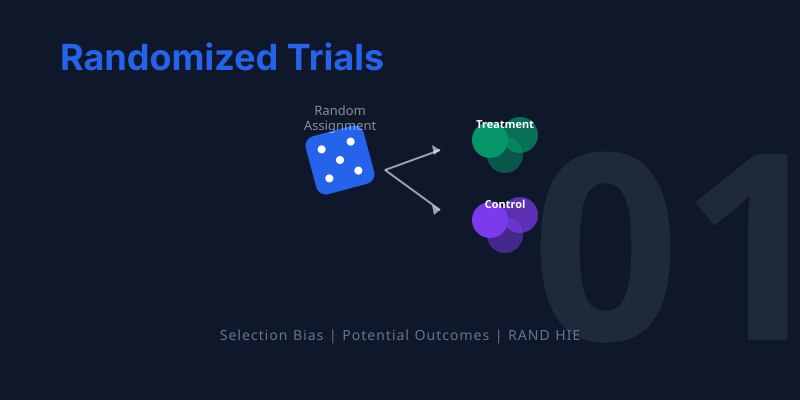

graph TD
A["THE QUESTION: Does insurance improve health?"]
B["NAIVE EVIDENCE: Insured are healthier, but is it causal?"]
C["THE PROBLEM: Selection bias contaminates the comparison"]
D["THE SOLUTION: Random assignment eliminates selection bias"]
E["THE EVIDENCE: Two landmark experiments — RAND and Oregon"]
A --> B --> C --> D --> E
style A fill:#3498db,color:#fff
style B fill:#e67e22,color:#fff
style C fill:#c0392b,color:#fff
style D fill:#8e44ad,color:#fff
style E fill:#2d8659,color:#fff
linkStyle default stroke:#fff,stroke-width:2px
1. Randomized Trials


TipLearning Objectives
By the end of this chapter, you will be able to:
- Explain why simple comparisons between treated and untreated groups often fail to reveal causal effects
- Define potential outcomes, selection bias, and average treatment effects
- Describe how random assignment eliminates selection bias
- Use regression on a dummy variable as a tool to compare group means
- Interpret results from two landmark health insurance experiments
- Understand standard errors and statistical significance
This chapter follows a clear arc: we start with a real-world question, discover why naive data comparisons are misleading, learn the theoretical framework that explains the problem, and then see how randomized experiments provide a solution.
Does Health Insurance Improve Health?
The United States spends more on health care than any other developed country, yet millions of Americans remain uninsured. A natural question arises: does having health insurance actually make people healthier?
NoteIntuition Builder: The Road Not Taken
Imagine standing at a fork in a road. One path leads through a world where you have health insurance; the other through a world where you don’t. You can only walk one path — you’ll never know what would have happened on the other. This is the fundamental problem of causal inference: we observe one outcome per person, but the causal effect requires comparing two.
At first glance, the answer seems obvious. We can look at survey data and compare the health of insured and uninsured people. Let’s do exactly that using the National Health Interview Survey (NHIS), an annual survey of the U.S. population.
import pandas as pd
import statsmodels.formula.api as smf
# Data URL — all datasets are hosted on GitHub
DATA = "https://raw.githubusercontent.com/cmg777/intro2causal/main/data/"
# Load pre-cleaned NHIS 2009 data (married couples aged 26-59)
nhis = pd.read_csv(DATA + "ch1/nhis_clean.csv")
nhis.head(3)| health | insurance | nonwhite | age | education | family_size | employed | family_income | gender | weight | |
|---|---|---|---|---|---|---|---|---|---|---|
| 0 | 4.0 | 0 | 0.0 | 29.0 | 14.0 | 4.0 | 0.0 | 19282.932 | wife | 8938.0 |
| 1 | 4.0 | 0 | 0.0 | 35.0 | 11.0 | 4.0 | 1.0 | 19282.932 | husband | 8967.0 |
| 2 | 3.0 | 1 | 0.0 | 32.0 | 12.0 | 4.0 | 1.0 | 167844.530 | husband | 8905.0 |
The dataset contains a health index (1 = poor, 5 = excellent), insurance status (1 = insured, 0 = uninsured), and demographic characteristics for married couples.
A First Look: Insured vs. Uninsured
Let’s start with the simplest possible comparison. What is the average health of insured people versus uninsured people?
# Average health by insurance status
means = nhis.groupby("insurance")["health"].mean()
pd.DataFrame({
"Insurance Status": ["Uninsured", "Insured"],
"Average Health (1-5)": [round(means[0], 2), round(means[1], 2)]
})| Insurance Status | Average Health (1-5) | |
|---|---|---|
| 0 | Uninsured | 3.66 |
| 1 | Insured | 3.98 |
Insured people are healthier. But can we conclude that insurance caused this difference?
The Problem: Other Differences Between Groups
Before drawing causal conclusions, let’s check whether insured and uninsured people differ in other ways too.
NoteRegression as a comparison tool
A simple but powerful trick: if you regress an outcome \(Y\) on a dummy variable \(D\) (where \(D = 1\) for treated, \(D = 0\) for untreated), the regression gives you:
- Intercept = average of \(Y\) in the untreated group (the control mean)
- Coefficient on \(D\) = difference in means between treated and untreated
- Standard error = a measure of how precisely the difference is estimated
This is exactly the same as computing group means and their difference — but regression also gives us a standard error, which tells us whether the difference is statistically meaningful.
NoteHow to read regression results
Throughout this study guide, we report regression results with standard errors (SE) in parentheses.
- The SE measures how precisely a coefficient is estimated
- Rule of thumb: if |coefficient / SE| > 2, the result is statistically significant at the 5% level
- For balance checks, we want insignificant results (confirming groups are similar)
- For treatment effects, significant results provide evidence of a causal effect
Let’s apply this to compare insured and uninsured people across multiple characteristics:
# Variables to compare across insurance groups
outcomes = ["health", "nonwhite", "age", "education",
"family_size", "employed", "family_income"]
# Run a separate regression for each variable and collect results
rows = []
for var in outcomes:
# Regress each variable on insurance dummy (with survey weights and robust SEs)
model = smf.wls(f"{var} ~ insurance", data=nhis, weights=nhis["weight"])
result = model.fit(cov_type="HC1")
# Intercept = uninsured mean; insurance coefficient = difference
rows.append({
"Variable": var,
"Uninsured mean": round(result.params["Intercept"], 2),
"Insured − Uninsured": round(result.params["insurance"], 2),
"Std. Error": round(result.bse["insurance"], 2),
})
pd.DataFrame(rows)| Variable | Uninsured mean | Insured − Uninsured | Std. Error | |
|---|---|---|---|---|
| 0 | health | 3.66 | 0.35 | 0.02 |
| 1 | nonwhite | 0.17 | -0.02 | 0.01 |
| 2 | age | 40.51 | 2.61 | 0.21 |
| 3 | education | 11.67 | 2.70 | 0.07 |
| 4 | family_size | 3.95 | -0.45 | 0.04 |
| 5 | employed | 0.72 | 0.13 | 0.01 |
| 6 | family_income | 45989.09 | 60352.25 | 976.23 |
WarningThe red flags of selection bias
The insured are healthier — but they are also:
- ~3 years more educated
- $60,000 richer in family income
- More likely to be employed
These are enormous differences. People who choose insurance are fundamentally different from those who don’t. The health gap we observed almost certainly reflects these pre-existing advantages, not (just) the causal effect of insurance.
Why Naive Comparisons Fail: Selection Bias
The NHIS comparison illustrates a deep problem in causal inference. To understand it precisely, we need a framework for thinking about what would have happened under different circumstances.
The Potential Outcomes Framework
Imagine person \(i\) stands at a fork in the road. One path leads to having insurance; the other doesn’t. Each path leads to a health outcome:
- \(Y_{1i}\) = health with insurance (what happens on the insurance road)
- \(Y_{0i}\) = health without insurance (what happens on the other road)
The causal effect of insurance for person \(i\) is \(Y_{1i} - Y_{0i}\) — the difference between the two roads. But here’s the catch: each person takes only one road. We observe \(Y_{1i}\) or \(Y_{0i}\), never both.
Seeing It Through an Example
| Anika | Ben | |
|---|---|---|
| Health without insurance (\(Y_{0i}\)) | 3 | 5 |
| Health with insurance (\(Y_{1i}\)) | 4 | 5 |
| Choice: buys insurance? (\(D_i\)) | Yes (1) | No (0) |
| Observed health | 4 | 5 |
| True causal effect | +1 | 0 |
Anika, who is prone to illness, buys insurance — it improves her health by 1 point. Ben, naturally robust, skips it — insurance wouldn’t have helped him anyway.
What do we observe? Anika’s health is 4; Ben’s is 5. The naive comparison (\(4 - 5 = -1\)) suggests insurance is harmful! The true effect on Anika is +1, but the comparison is polluted by the fact that Ben was healthier to begin with.
WarningCommon Misconception
“Insured people are healthier, so insurance must work.” This confuses correlation with causation. The Anika/Ben example shows that even when the treated group looks worse, the true treatment effect can be positive. The observed comparison reflects both the causal effect and the pre-existing differences between people who choose treatment and those who don’t. You cannot read causation from a simple comparison — ever.
The Decomposition
This leads to a fundamental equation. Any observed comparison can be split into two pieces:
\[\underbrace{\text{Observed difference}}_{\text{What we see}} = \underbrace{\kappa}_{\text{Causal effect}} + \underbrace{\text{Avg}[Y_{0i} | D_i\!=\!1] - \text{Avg}[Y_{0i} | D_i\!=\!0]}_{\text{Selection bias}}\]
graph LR
A["Observed Difference<br/>(Insured vs. Uninsured)"] --> B["Causal Effect (κ)<br/>What insurance<br/>actually does"]
A --> C["Selection Bias<br/>Pre-existing differences<br/>between the groups"]
style B fill:#2d8659,color:#fff
style C fill:#c0392b,color:#fff
style A fill:#2c3e50,color:#fff
linkStyle default stroke:#fff,stroke-width:2px
Selection bias is the difference in health that would exist even without insurance — it reflects the fact that healthier, wealthier, more educated people are more likely to be insured. The NHIS data above showed exactly this pattern.
graph TD
C["Confounders<br/>(Education, Income,<br/>Employment, etc.)"] -->|"affects"| I["Insurance<br/>Status"]
C -->|"affects"| H["Health<br/>Outcomes"]
I -.->|"causal effect?"| H
style C fill:#e67e22,color:#fff
style I fill:#3498db,color:#fff
style H fill:#2d8659,color:#fff
linkStyle default stroke:#fff,stroke-width:2px
ImportantThe Fundamental Problem of Causal Inference
We want \(\kappa\) (the causal effect), but what we observe is \(\kappa\) plus selection bias. We cannot separate the two without a strategy that eliminates the bias.
The Solution: Random Assignment
The Core Idea
What if, instead of letting people choose insurance, we assigned it randomly — like a coin flip? This is the insight behind randomized controlled trials (RCTs).
When treatment is randomly assigned:
- The insured and uninsured groups are drawn from the same population
- They have similar education, income, health habits, and every other characteristic
- This includes characteristics we cannot observe or measure
The Law of Large Numbers guarantees this: in large random samples, group averages converge to the population average. So both groups end up looking alike.
NoteIntuition Builder: The Dice Analogy
Roll a fair die once — you might get 1 or 6, far from the expected value of 3.5. Roll it 10 times — the average gets closer. Roll it 10,000 times — the average is almost exactly 3.5. This is why casinos always win in the long run: any single bet is a toss-up, but over thousands of plays, the house edge reliably prevails. Random assignment works the same way: with enough people, the treatment and control groups converge to being identical on every characteristic — even ones we can’t see.
graph TD
P["Target Population"] --> R{"Random<br/>Assignment"}
R -->|"Coin = Heads"| T["Treatment Group<br/>(Receives insurance)"]
R -->|"Coin = Tails"| C["Control Group<br/>(No insurance)"]
T --> OT["Measure Health"]
C --> OC["Measure Health"]
OT --> D["Difference in Means<br/>= Causal Effect (κ)"]
OC --> D
style R fill:#8e44ad,color:#fff
style T fill:#2d8659,color:#fff
style C fill:#c0392b,color:#fff
style D fill:#2c3e50,color:#fff
linkStyle default stroke:#fff,stroke-width:2px
Why It Works Mathematically
With random assignment, the expected baseline health is the same in both groups:
\[E[Y_{0i} \mid D_i = 1] = E[Y_{0i} \mid D_i = 0]\]
This makes the selection bias term zero, so the observed difference equals the causal effect:
\[E[Y_i \mid D_i = 1] - E[Y_i \mid D_i = 0] = \kappa\]
Checking for Balance
Even in a randomized experiment, good practice requires us to check for balance: verify that baseline characteristics look similar across treatment groups. If they do, we can be confident that randomization worked and that the comparison is credible.
Case Study 1: The RAND Health Insurance Experiment
Background
The RAND Health Insurance Experiment (HIE), running from 1974 to 1982, remains one of the most influential social experiments ever conducted. Nearly 4,000 people from six U.S. sites were randomly assigned to insurance plans with varying levels of generosity:
| Plan Type | What Participants Pay | Role in the Experiment |
|---|---|---|
| Catastrophic (3 plans) | 95% of costs (capped) | Control group (≈ no insurance) |
| Deductible (1 plan) | 95% outpatient only (lower cap) | Moderate treatment |
| Coinsurance (9 plans) | 25–50% of costs (capped) | Moderate treatment |
| Free (1 plan) | Nothing — all care is free | Most generous treatment |
The experiment asked two questions:
- When health care is cheaper, do people use more of it?
- Does using more health care improve health?
Step 1: Verify Randomization (Balance Check)
First, we check whether randomization created comparable groups. We regress each baseline characteristic on plan-type dummies. The catastrophic plan is the omitted reference group, so each coefficient represents the difference between that plan group and the catastrophic group.
# Load pre-cleaned RAND HIE baseline data
rand = pd.read_csv(DATA + "ch1/rand_balance.csv")
rand.head(3)| female | nonwhite | age | education | family_income | health_index | cholesterol | blood_pressure | mental_health | plan_type | plan_free | plan_deductible | plan_coinsurance | any_insurance | family_id | |
|---|---|---|---|---|---|---|---|---|---|---|---|---|---|---|---|
| 0 | NaN | NaN | NaN | NaN | NaN | NaN | NaN | NaN | NaN | NaN | NaN | NaN | NaN | 0 | NaN |
| 1 | 0.0 | 1.0 | 42.0 | 12.0 | 67486.484 | NaN | NaN | NaN | 95.0 | 4.0 | 0.0 | 0.0 | 0.0 | 0 | 100082.0 |
| 2 | 0.0 | NaN | 16.0 | NaN | 67486.484 | NaN | NaN | NaN | 93.8 | 4.0 | 0.0 | 0.0 | 0.0 | 0 | 100082.0 |
Before running the full table, let’s see what a single balance check looks like. Is the average age different across plan groups?
# Prepare data (drop rows with missing values)
d = rand[["age", "plan_free", "plan_deductible", "plan_coinsurance", "family_id"]].dropna()
# Regress age on plan-type dummies (catastrophic = omitted reference group)
model = smf.ols("age ~ plan_free + plan_deductible + plan_coinsurance", data=d)
# Cluster standard errors by family (family members share the same plan)
result = model.fit(cov_type="cluster", cov_kwds={"groups": d["family_id"]})
# Extract key regression results into a clear table
pd.DataFrame({
"Variable": result.params.index,
"Coefficient": result.params.round(4).values,
"Std. Error": result.bse.round(4).values,
"t-statistic": result.tvalues.round(2).values,
"p-value": result.pvalues.round(3).values,
})| Variable | Coefficient | Std. Error | t-statistic | p-value | |
|---|---|---|---|---|---|
| 0 | Intercept | 32.3610 | 0.4849 | 66.73 | 0.000 |
| 1 | plan_free | 0.4350 | 0.6140 | 0.71 | 0.479 |
| 2 | plan_deductible | 0.5607 | 0.6759 | 0.83 | 0.407 |
| 3 | plan_coinsurance | 0.9658 | 0.6547 | 1.48 | 0.140 |
The Intercept (32.4) is the average age in the catastrophic group. The coefficients on the plan dummies (0.43 to 0.97) are the age differences — all small and statistically insignificant. Age is balanced.
NoteWhy do we cluster standard errors by family?
In the RAND HIE, all members of a family were assigned to the same insurance plan. This means observations within a family are not independent — knowing one family member’s plan tells you the other’s. Clustering standard errors at the family level corrects for this correlation, preventing us from overstating the precision of our estimates.
Now let’s run the full balance check across all baseline variables:
# List of baseline variables to check
balance_vars = ["female", "nonwhite", "age", "education", "family_income",
"health_index", "cholesterol", "blood_pressure", "mental_health"]
# Run a separate regression for each variable and collect results
rows = []
for var in balance_vars:
# Drop missing values for this variable
d = rand[[var, "plan_free", "plan_deductible", "plan_coinsurance", "family_id"]].dropna()
# Regress baseline variable on plan dummies
model = smf.ols(f"{var} ~ plan_free + plan_deductible + plan_coinsurance", data=d)
# Cluster standard errors by family (family members share the same plan)
r = model.fit(cov_type="cluster", cov_kwds={"groups": d["family_id"]})
# Extract coefficients and standard errors for each plan comparison
coef_free = round(r.params["plan_free"], 2)
se_free = round(r.bse["plan_free"], 2)
coef_ded = round(r.params["plan_deductible"], 2)
se_ded = round(r.bse["plan_deductible"], 2)
coef_coin = round(r.params["plan_coinsurance"], 2)
se_coin = round(r.bse["plan_coinsurance"], 2)
rows.append({
"Variable": var,
"Catastrophic mean": round(r.params["Intercept"], 1),
"Free − Catastrophic": format(coef_free, ".2f") + " (" + format(se_free, ".2f") + ")",
"Deductible − Catastrophic": format(coef_ded, ".2f") + " (" + format(se_ded, ".2f") + ")",
"Coinsurance − Catastrophic": format(coef_coin, ".2f") + " (" + format(se_coin, ".2f") + ")",
})
pd.DataFrame(rows)| Variable | Catastrophic mean | Free − Catastrophic | Deductible − Catastrophic | Coinsurance − Catastrophic | |
|---|---|---|---|---|---|
| 0 | female | 0.6 | -0.04 (0.01) | -0.02 (0.02) | -0.02 (0.02) |
| 1 | nonwhite | 0.2 | -0.03 (0.02) | -0.02 (0.03) | -0.03 (0.02) |
| 2 | age | 32.4 | 0.43 (0.61) | 0.56 (0.68) | 0.97 (0.65) |
| 3 | education | 12.1 | -0.26 (0.18) | -0.16 (0.19) | -0.06 (0.19) |
| 4 | family_income | 31603.2 | -976.18 (1344.55) | -2104.39 (1383.69) | 969.76 (1389.01) |
| 5 | health_index | 70.9 | -1.31 (0.87) | -1.44 (0.95) | 0.21 (0.92) |
| 6 | cholesterol | 207.3 | -5.25 (2.70) | -1.42 (2.98) | -1.93 (2.76) |
| 7 | blood_pressure | 122.3 | 1.12 (1.01) | 2.32 (1.15) | 0.91 (1.08) |
| 8 | mental_health | 73.8 | 0.89 (0.77) | -0.12 (0.82) | 1.19 (0.81) |
Verdict: Differences are small, go in both directions, and almost none are statistically significant. Randomization worked. Compare this to the NHIS table earlier, where insured and uninsured groups differed dramatically on every dimension.
Step 2: Estimate Causal Effects on Health-Care Use
Now we turn to outcomes. Because treatment was randomly assigned, the same regression approach that checked balance now gives us causal effects. The coefficient on each plan dummy tells us how much that plan changed health-care use relative to having no insurance.
# Load pre-cleaned RAND HIE utilization data (person-year panel)
hie = pd.read_csv(DATA + "ch1/rand_utilization.csv")
hie.head(3)| visits | outpatient_expenses | admissions | inpatient_expenses | total_expenses | plan_type | plan_free | plan_deductible | plan_coinsurance | any_insurance | family_id | |
|---|---|---|---|---|---|---|---|---|---|---|---|
| 0 | 0.0 | 36.305501 | 0.0 | 0.0 | 36.305501 | 4.0 | 0 | 0 | 0 | 0 | 100082 |
| 1 | 4.0 | 275.208504 | 0.0 | 0.0 | 275.208504 | 4.0 | 0 | 0 | 0 | 0 | 100082 |
| 2 | 0.0 | 0.000000 | 0.0 | 0.0 | 0.000000 | 4.0 | 0 | 0 | 0 | 0 | 100082 |
# Outcome variables measuring health-care utilization
use_vars = ["visits", "outpatient_expenses", "admissions",
"inpatient_expenses", "total_expenses"]
# Run a separate regression for each variable and collect results
rows = []
for var in use_vars:
# Drop missing values for this outcome
d = hie[[var, "plan_free", "plan_deductible", "plan_coinsurance", "family_id"]].dropna()
# Regress outcome on plan dummies — gives causal effects (because of randomization!)
model = smf.ols(f"{var} ~ plan_free + plan_deductible + plan_coinsurance", data=d)
# Cluster standard errors by family (family members share the same plan)
r = model.fit(cov_type="cluster", cov_kwds={"groups": d["family_id"]})
# Intercept = control group (catastrophic plan) mean
# Coefficients = causal effect of each plan relative to catastrophic
coef_free = int(round(r.params["plan_free"]))
se_free = int(round(r.bse["plan_free"]))
coef_ded = int(round(r.params["plan_deductible"]))
se_ded = int(round(r.bse["plan_deductible"]))
coef_coin = int(round(r.params["plan_coinsurance"]))
se_coin = int(round(r.bse["plan_coinsurance"]))
rows.append({
"Outcome": var,
"Catastrophic mean": int(round(r.params["Intercept"])),
"Free effect": str(coef_free) + " (" + str(se_free) + ")",
"Deductible effect": str(coef_ded) + " (" + str(se_ded) + ")",
"Coinsurance effect": str(coef_coin) + " (" + str(se_coin) + ")",
})
pd.DataFrame(rows)| Outcome | Catastrophic mean | Free effect | Deductible effect | Coinsurance effect | |
|---|---|---|---|---|---|
| 0 | visits | 3 | 2 (0) | 0 (0) | 0 (0) |
| 1 | outpatient_expenses | 248 | 169 (20) | 42 (21) | 60 (21) |
| 2 | admissions | 0 | 0 (0) | 0 (0) | 0 (0) |
| 3 | inpatient_expenses | 388 | 116 (60) | 72 (68) | 93 (73) |
| 4 | total_expenses | 636 | 285 (72) | 114 (79) | 152 (84) |
NoteInterpretation: The demand for health care
The free plan caused large increases in utilization:
- +1.7 more doctor visits per year
- +$169 in outpatient spending (a 68% increase over the catastrophic group’s $248)
- +$285 in total spending (a 45% increase)
This is the demand curve at work: when insurance lowers the out-of-pocket price of care to zero, people use substantially more of it. Economists call this moral hazard — not a moral judgment, but simply the observation that people respond to incentives.
Step 3: Estimate Causal Effects on Health
Here is the crucial test. All that extra spending bought more health care — but did it buy better health? These outcomes were measured 3–5 years after random assignment.
# Load pre-cleaned RAND HIE exit health measures
health = pd.read_csv(DATA + "ch1/rand_health_outcomes.csv")
health.head(3)| health_index | cholesterol | blood_pressure | mental_health | plan_type | plan_free | plan_deductible | plan_coinsurance | any_insurance | family_id | |
|---|---|---|---|---|---|---|---|---|---|---|
| 0 | NaN | NaN | NaN | NaN | NaN | NaN | NaN | NaN | 0 | NaN |
| 1 | 71.6 | 245.0 | 128.0 | 94.7 | 4.0 | 0.0 | 0.0 | 0.0 | 0 | 100082.0 |
| 2 | 69.3 | 207.0 | 100.0 | 76.1 | 4.0 | 0.0 | 0.0 | 0.0 | 0 | 100082.0 |
# Health outcome variables (measured at the end of the experiment)
health_vars = ["health_index", "cholesterol", "blood_pressure", "mental_health"]
# Run a separate regression for each variable and collect results
rows = []
for var in health_vars:
# Drop missing values
d = health[[var, "plan_free", "plan_deductible", "plan_coinsurance", "family_id"]].dropna()
# Regress health outcome on plan dummies
model = smf.ols(f"{var} ~ plan_free + plan_deductible + plan_coinsurance", data=d)
# Cluster standard errors by family (family members share the same plan)
r = model.fit(cov_type="cluster", cov_kwds={"groups": d["family_id"]})
# Extract coefficients and standard errors
coef_free = round(r.params["plan_free"], 2)
se_free = round(r.bse["plan_free"], 2)
coef_ded = round(r.params["plan_deductible"], 2)
se_ded = round(r.bse["plan_deductible"], 2)
coef_coin = round(r.params["plan_coinsurance"], 2)
se_coin = round(r.bse["plan_coinsurance"], 2)
rows.append({
"Health Measure": var,
"Catastrophic mean": round(r.params["Intercept"], 1),
"Free effect": format(coef_free, ".2f") + " (" + format(se_free, ".2f") + ")",
"Deductible effect": format(coef_ded, ".2f") + " (" + format(se_ded, ".2f") + ")",
"Coinsurance effect": format(coef_coin, ".2f") + " (" + format(se_coin, ".2f") + ")",
})
pd.DataFrame(rows)| Health Measure | Catastrophic mean | Free effect | Deductible effect | Coinsurance effect | |
|---|---|---|---|---|---|
| 0 | health_index | 68.5 | -0.78 (0.87) | -0.87 (0.96) | 0.61 (0.90) |
| 1 | cholesterol | 203.2 | -1.83 (2.39) | 0.69 (2.57) | -2.31 (2.47) |
| 2 | blood_pressure | 121.9 | -0.52 (0.93) | 1.17 (1.06) | -1.39 (0.98) |
| 3 | mental_health | 75.5 | 0.43 (0.82) | 0.45 (0.91) | 1.07 (0.87) |
ImportantThe RAND Paradox: More Care ≠ Better Health
The results are striking. Across all four health measures — general health, cholesterol, blood pressure, and mental health — the differences between plan groups are small and statistically insignificant.
Despite consuming 45% more health care, participants in the free plan showed no measurable improvement in health compared to those with minimal coverage.
This is a precisely estimated null: the standard errors are small enough to rule out large health benefits. The experiment was not too small to detect an effect — the effect simply wasn’t there.
What Did We Learn from the RAND HIE?
The RAND experiment delivered three key lessons:
- People respond to prices. Cheaper health care leads to more consumption (moral hazard is real).
- More care does not automatically mean better health. The marginal medical care consumed when it’s free may not be very valuable.
- Randomization reveals the truth. The naive NHIS comparison suggested a large health benefit of insurance. The randomized experiment showed this was mostly selection bias.
These findings directly shaped the policy debate around the Affordable Care Act (2010). Proponents argued for universal coverage to improve health; skeptics cited RAND to argue that subsidized insurance mainly increases spending. The truth, as we’ll see from Oregon, is more nuanced.
NoteConnection to Chapter 3: Non-Compliance
In the Oregon lottery, only about 25% of winners actually enrolled in Medicaid (the rest failed paperwork or were ineligible). This means the simple winner/loser comparison understates the true effect on those who gained insurance. Adjusting for this non-compliance requires instrumental variables (Chapter 3): divide the winner/loser difference by the enrollment rate. This is a preview of the IV method.
Case Study 2: The Oregon Health Plan
Why a Second Experiment?
The RAND HIE was groundbreaking, but it studied middle-class families who all had at least catastrophic coverage. Today’s uninsured Americans are different: younger, poorer, less educated. Would insurance help them more?
In 2008, the state of Oregon ran a health insurance lottery. About 75,000 low-income adults applied for Medicaid expansion; roughly 30,000 were randomly selected to apply for coverage. Economist Amy Finkelstein and colleagues studied the results.
Results at a Glance
| Outcome | Effect of Winning the Lottery |
|---|---|
| Medicaid enrollment | +25.6 percentage points |
| Hospital admissions | Small increase |
| Emergency dept. visits | +10% (policymakers expected a decrease) |
| Self-reported health | Modest improvement (+3.9 pp) |
| Physical health (cholesterol, BP) | No significant change |
| Mental health | Improved |
| Catastrophic medical expenses | Decreased |
| Medical debt | Decreased |
Comparing the Two Experiments
| RAND HIE (1974–1982) | Oregon OHP (2008) | |
|---|---|---|
| Population | Middle-class families | Low-income adults |
| More care used? | Yes | Yes |
| Better physical health? | No | No |
| Better mental health? | Not measured | Yes |
| Less financial hardship? | Not measured | Yes |
The two experiments, conducted decades apart on very different populations, reached remarkably similar conclusions about physical health. The Oregon study added two important insights: insurance provides financial protection (less medical debt) and mental health benefits — which may be its primary value for low-income populations.
Historical Perspective: Pioneers of Randomization
The idea of using controlled comparisons did not appear overnight. Key milestones in the development of experimental methods:
timeline
title From Ancient Wisdom to Modern Trials
section Ancient
~600 BCE : Daniel's dietary trial
: First recorded use of a control group
section 18th Century
1747 : James Lind's scurvy experiment
: Tested citrus fruits on sailors
: His theory was wrong, but his data were right
section 19th Century
1885 : Peirce & Jastrow
: First use of random assignment
section 20th Century
1925 : R.A. Fisher formalizes RCTs
: Statistical Methods for Research Workers
1974 : RAND HIE launches
: Largest social experiment of its era
- Daniel (~600 BCE) proposed a 10-day vegetarian diet trial with a control group eating the king’s rich food — perhaps the first controlled experiment
- James Lind (1747) tested citrus fruits against other scurvy remedies. His theory (acids cure scurvy) was wrong, but his empirical finding was correct — a lesson about letting data speak
- R.A. Fisher (1920s–30s) formalized the theory of random assignment and experimental design, launching the modern era of RCTs
Statistical Inference Toolkit
Throughout this chapter, we reported regression results with standard errors. Here is a brief guide to interpreting these numbers.
The Core Problem: Sampling Variability
Any estimate from a sample could differ if we drew a different sample from the same population. Statistical inference quantifies this uncertainty.
Key Concepts
| Concept | Symbol | Plain English |
|---|---|---|
| Sample mean | \(\bar{Y}\) | The average in our data |
| Standard error | \(SE(\bar{Y})\) | How much \(\bar{Y}\) would vary across different samples |
| t-statistic | coefficient / SE | How many SEs away from zero is our estimate? |
| 95% Confidence interval | estimate \(\pm\) 2 \(\times\) SE | The range of values consistent with our data |
The Rule of Thumb
TipWhen is a result “statistically significant”?
If the t-statistic (coefficient divided by its standard error) exceeds 2 in absolute value, the result is statistically significant at the 5% level. This means it is unlikely to have arisen by chance alone.
For balance checks: we want insignificant results (small t-stats), confirming groups are comparable.
For treatment effects: significant results provide evidence of a real causal effect.
A Crucial Caveat
Statistical significance measures precision, not importance:
- A large t-statistic can come from a huge sample (very precise), not necessarily a large effect
- A small t-statistic can mean the effect is small or that our sample is too small to detect it
- Lack of significance ≠ lack of effect — it may just mean insufficient data
Always consider both the size of a coefficient and its statistical precision.
Key Takeaways
graph TD
Q["Causal Question"] --> NC["Naive Comparison"]
NC --> SB["Selection Bias discovered"]
SB --> PO["Potential Outcomes Framework explains why"]
PO --> RA["Random Assignment as the solution"]
RA --> BC["Balance Check to verify"]
BC --> TE["Estimate Causal Effect"]
TE --> R["RAND HIE: more care does not improve health"]
TE --> O["Oregon OHP: insurance helps finances and mental health"]
style Q fill:#2c3e50,color:#fff
style SB fill:#c0392b,color:#fff
style PO fill:#e67e22,color:#fff
style RA fill:#8e44ad,color:#fff
style BC fill:#3498db,color:#fff
style TE fill:#2d8659,color:#fff
style R fill:#2d8659,color:#fff
style O fill:#2d8659,color:#fff
linkStyle default stroke:#fff,stroke-width:2px
Correlation is not causation. Observed differences between groups reflect causal effects plus selection bias.
The potential outcomes framework (\(Y_{1i}\), \(Y_{0i}\)) gives precise language for causal questions.
Selection bias arises because people who choose treatment differ from those who don’t.
Random assignment eliminates selection bias by making groups comparable.
Always check for balance to verify that randomization worked.
Regression on a dummy variable is the primary tool for comparing group means and testing for differences.
The RAND HIE found that free insurance increased spending by 45% but did not improve health.
The Oregon OHP confirmed these findings and showed that insurance helps with financial protection and mental health.
Learn by Coding
Copy this code into a Python notebook to reproduce the key results from this chapter.
# ============================================================
# Chapter 1: Randomized Trials — Code Cheatsheet
# ============================================================
import pandas as pd
import statsmodels.formula.api as smf
DATA = "https://raw.githubusercontent.com/cmg777/intro2causal/main/data/"
# --- Step 1: Load NHIS data and compare health by insurance status ---
nhis = pd.read_csv(DATA + "ch1/nhis_clean.csv")
print("Average health by insurance status:")
print(nhis.groupby("insurance")["health"].mean().round(2))
# --- Step 2: Regression on a dummy (difference in means + standard error) ---
model = smf.ols("health ~ insurance", data=nhis)
result = model.fit(cov_type="HC1")
print("\nHealth ~ Insurance:")
print(result.summary().tables[1])
# --- Step 3: Balance check (RAND HIE — did randomization work?) ---
rand = pd.read_csv(DATA + "ch1/rand_balance.csv")
d = rand[["age", "plan_free", "plan_deductible", "plan_coinsurance", "family_id"]].dropna()
model = smf.ols("age ~ plan_free + plan_deductible + plan_coinsurance", data=d)
result = model.fit(cov_type="cluster", cov_kwds={"groups": d["family_id"]})
print("\nBalance check — Age across plan groups:")
print(result.summary().tables[1])
# --- Step 4: Causal effect of free insurance on spending ---
hie = pd.read_csv(DATA + "ch1/rand_utilization.csv")
d = hie[["total_expenses", "plan_free", "plan_deductible", "plan_coinsurance", "family_id"]].dropna()
model = smf.ols("total_expenses ~ plan_free + plan_deductible + plan_coinsurance", data=d)
result = model.fit(cov_type="cluster", cov_kwds={"groups": d["family_id"]})
print("\nCausal effect on total spending:")
print(result.summary().tables[1])
# --- Step 5: Causal effect on health (the RAND paradox: no effect!) ---
health = pd.read_csv(DATA + "ch1/rand_health_outcomes.csv")
d = health[["health_index", "plan_free", "plan_deductible", "plan_coinsurance", "family_id"]].dropna()
model = smf.ols("health_index ~ plan_free + plan_deductible + plan_coinsurance", data=d)
result = model.fit(cov_type="cluster", cov_kwds={"groups": d["family_id"]})
print("\nCausal effect on health (expect: no significant effect):")
print(result.summary().tables[1])
TipTry it yourself!
Copy the code above and paste it into this Google Colab scratchpad to run it interactively. Modify the variables, change the specifications, and see how results change!
Exercises
Multiple Choice Questions
CautionMultiple Choice Questions
- What is the fundamental problem of causal inference?
- We cannot measure outcomes accurately
- We can only observe one potential outcome per person
- Random assignment is impossible in practice
- Sample sizes are always too small
- In the RAND Health Insurance Experiment, what happened to physical health when people received free insurance?
- It improved dramatically
- It worsened due to overuse of care
- It showed no significant improvement despite higher spending
- It improved only for high-income participants
- Selection bias occurs when:
- The sample size is too small for reliable estimates
- The treatment and control groups differ in ways related to the outcome
- Researchers choose which results to report
- Survey respondents lie about their behavior
- Why is random assignment considered the gold standard for causal inference?
- It guarantees a large sample size
- It eliminates measurement error
- It makes treatment and control groups comparable on all characteristics, even unobserved ones
- It ensures perfect compliance with assigned treatment
- A regression coefficient has a t-statistic of 3.5. This means:
- The effect is large in practical terms
- The result is unlikely to have arisen by chance alone
- The regression model fits the data well
- The sample is representative of the population
Conceptual Questions
CautionConceptual Questions
Spotting selection bias: A study reports that people who eat organic food live 3 years longer. List three reasons why this comparison might reflect selection bias rather than a causal effect of organic food.
Reading a regression: In the balance check above, the coefficient on
plan_freeforfamily_incomeis approximately −976 with SE ≈ 1,345. (a) What is the t-statistic? (b) Is this difference statistically significant? (c) What does your answer tell us about whether randomization worked for this variable?The RAND paradox: Your friend says “The RAND experiment proves health insurance is worthless.” Write a short paragraph explaining why this is an oversimplification. What did the Oregon experiment show that insurance is good for?
Random assignment and selection bias: Using the decomposition equation from this chapter, explain step by step why random assignment makes the selection bias term equal to zero. What role does the Law of Large Numbers play?
Designing an RCT: You want to test whether free school lunches improve student test scores. (a) How would you randomly assign treatment? (b) What outcome would you measure? (c) What balance check would you run? (d) Why might some students assigned to “free lunch” not actually eat it, and what problem does this create?
Research Tasks
CautionResearch Tasks
Binary balance check: Using
rand_balance.csv, run a balance check using the single dummyany_insurance(instead of the three plan dummies). Regressage,education, andhealth_indexonany_insurancewith family-clustered SEs. Do you reach the same conclusion about balance as the three-dummy specification?Relative utilization increases: Using
rand_utilization.csv, compute the percentage increase in each utilization outcome for the free plan relative to the catastrophic group mean. Which outcome shows the largest relative increase: visits, outpatient expenses, admissions, or total expenses?Husbands vs. wives: Using
nhis_clean.csv, run the insurance-health comparison separately for husbands and wives. Is the selection bias (the gap in education and income between insured and uninsured) larger for one gender? What might explain any differences?
Solutions
Multiple Choice Questions
MCQ1. (b) The fundamental problem of causal inference is that we can only observe one potential outcome per person — we see what happened, but never what would have happened under the alternative. Options (a) and (d) are practical concerns but not the fundamental problem; (c) is false — random assignment is used in many experiments.
MCQ2. (c) Despite consuming 45% more health care, participants with free insurance showed no significant improvement in physical health measures (general health, cholesterol, blood pressure, mental health). The RAND experiment was large enough to detect meaningful effects — the effect simply wasn’t there.
MCQ3. (b) Selection bias arises when the people who receive treatment differ systematically from those who don’t in ways that also affect the outcome. In the NHIS data, insured people were wealthier, more educated, and more likely to be employed — all factors that independently predict better health.
MCQ4. (c) Random assignment ensures that, in expectation, treatment and control groups are identical on all characteristics — including ones we cannot observe or measure. This is what makes the selection bias term equal to zero. Options (a) and (b) are unrelated to randomization; (d) is wrong because non-compliance can still occur (as we see in Chapter 3).
MCQ5. (b) A t-statistic above 2 indicates statistical significance at the 5% level, meaning the result is unlikely due to chance. Option (a) confuses statistical significance with practical importance — a large t-stat can come from a precise estimate of a small effect. Options (c) and (d) are unrelated to the t-statistic.
Conceptual Questions
Q1. Three sources of selection bias in the organic food comparison: (a) People who buy organic food tend to have higher incomes, and wealthier people have better access to health care and live longer regardless of diet. (b) Organic food buyers are likely more health-conscious overall — they exercise more, smoke less, and manage stress better. (c) Education is correlated with both organic food consumption and longevity; more-educated people make healthier choices across many domains.
Q2. (a) The t-statistic is −976 / 1,345 ≈ −0.73. (b) Since |−0.73| < 2, this difference is NOT statistically significant. (c) This tells us that the difference in family income between the free plan and catastrophic plan groups is small enough to be attributable to chance. Randomization worked for this variable — the groups are comparable on family income.
Q3. The RAND experiment found no effect on physical health, but this does not mean insurance is useless. Insurance serves multiple purposes: (a) it provides financial protection — the Oregon experiment showed that lottery winners had less medical debt and fewer catastrophic medical expenses; (b) it improves mental health — Oregon lottery winners reported better mental health scores; (c) it increases access to care, which may matter more for acute conditions or preventive services not captured by the RAND outcome measures. The correct conclusion is that more generous insurance increases spending without improving measurable physical health, but it provides valuable financial security and mental health benefits.
Q4. The decomposition states: Observed difference = \(\kappa\) + Selection bias, where selection bias = \(E[Y_{0i} | D_i = 1] - E[Y_{0i} | D_i = 0]\). When \(D_i\) is randomly assigned, the treatment and control groups are drawn from the same population. The Law of Large Numbers guarantees that with a large enough sample, the average baseline health \(Y_{0i}\) will be nearly identical in both groups. Formally, \(E[Y_{0i} | D_i = 1] = E[Y_{0i} | D_i = 0]\), so the selection bias term equals zero. The observed difference then equals \(\kappa\), the true causal effect.
Q5. (a) Randomly select classrooms or schools to receive the program (cluster randomization), or randomly assign individual students within each school. (b) Measure standardized test scores at the end of the semester/year. (c) Compare baseline characteristics (prior test scores, demographics, family income) between treatment and control groups to verify balance. (d) Some students may refuse the lunch, share it, or already receive food from other sources. This is a non-compliance problem: the intent-to-treat effect (being offered lunch) may differ from the effect of actually eating it. This foreshadows the instrumental variables approach in Chapter 3.
Research Tasks
R1.
import pandas as pd
import statsmodels.formula.api as smf
rand = pd.read_csv(DATA + "ch1/rand_balance.csv")
# Run a separate regression for each variable and collect results
rows = []
for var in ["age", "education", "health_index"]:
d = rand[[var, "any_insurance", "family_id"]].dropna()
# Regress baseline variable on single binary dummy
model = smf.ols(f"{var} ~ any_insurance", data=d)
# Cluster standard errors by family (family members share the same plan)
r = model.fit(cov_type="cluster", cov_kwds={"groups": d["family_id"]})
rows.append({
"Variable": var,
"Catastrophic mean": round(r.params["Intercept"], 1),
"Any ins. difference": round(r.params["any_insurance"], 2),
"SE": round(r.bse["any_insurance"], 2),
"t-stat": round(r.tvalues["any_insurance"], 2),
})
pd.DataFrame(rows)| Variable | Catastrophic mean | Any ins. difference | SE | t-stat | |
|---|---|---|---|---|---|
| 0 | age | 32.4 | 0.64 | 0.54 | 1.18 |
| 1 | education | 12.1 | -0.17 | 0.16 | -1.07 |
| 2 | health_index | 70.9 | -0.93 | 0.77 | -1.20 |
All t-statistics are small (well below 2), confirming that balance holds regardless of whether we use three plan dummies or a single binary indicator. The binary specification pools all non-catastrophic plans together, which is simpler but loses information about differences across plan types.
R2.
hie = pd.read_csv(DATA + "ch1/rand_utilization.csv")
# Run a separate regression for each variable and collect results
rows = []
for var in ["visits", "outpatient_expenses", "admissions", "inpatient_expenses", "total_expenses"]:
d = hie[[var, "plan_free", "plan_deductible", "plan_coinsurance", "family_id"]].dropna()
# Regress utilization on plan dummies
model = smf.ols(f"{var} ~ plan_free + plan_deductible + plan_coinsurance", data=d)
# Cluster standard errors by family (family members share the same plan)
r = model.fit(cov_type="cluster", cov_kwds={"groups": d["family_id"]})
# Intercept = catastrophic mean, plan_free coefficient = absolute increase
cat_mean = r.params["Intercept"]
free_effect = r.params["plan_free"]
pct_increase = (free_effect / cat_mean) * 100
rows.append({
"Outcome": var,
"Catastrophic mean": int(round(cat_mean)),
"Free plan effect": int(round(free_effect)),
"% increase": round(pct_increase, 1),
})
pd.DataFrame(rows)| Outcome | Catastrophic mean | Free plan effect | % increase | |
|---|---|---|---|---|
| 0 | visits | 3 | 2 | 59.8 |
| 1 | outpatient_expenses | 248 | 169 | 68.2 |
| 2 | admissions | 0 | 0 | 29.1 |
| 3 | inpatient_expenses | 388 | 116 | 30.0 |
| 4 | total_expenses | 636 | 285 | 44.9 |
Outpatient expenses show the largest relative increase (~68%), followed by face-to-face visits (~60%). Hospital admissions show a smaller relative increase (~29%), consistent with the idea that inpatient decisions are made by doctors rather than patients. Total expenses rose ~45%. The price elasticity of demand is strongest for outpatient care, where patients have more discretion.
R3.
nhis = pd.read_csv(DATA + "ch1/nhis_clean.csv")
# Run a separate regression for each gender-variable combination
rows = []
for gender in ["husband", "wife"]:
subset = nhis[nhis["gender"] == gender]
for var in ["health", "education", "family_income"]:
# Regress each variable on insurance dummy (with survey weights and robust SEs)
model = smf.wls(f"{var} ~ insurance", data=subset, weights=subset["weight"])
r = model.fit(cov_type="HC1")
rows.append({
"Gender": gender,
"Variable": var,
"Difference (Ins - Unins)": round(r.params["insurance"], 2),
"SE": round(r.bse["insurance"], 2),
})
pd.DataFrame(rows)| Gender | Variable | Difference (Ins - Unins) | SE | |
|---|---|---|---|---|
| 0 | husband | health | 0.31 | 0.03 |
| 1 | husband | education | 2.74 | 0.10 |
| 2 | husband | family_income | 60810.44 | 1355.79 |
| 3 | wife | health | 0.39 | 0.04 |
| 4 | wife | education | 2.64 | 0.11 |
| 5 | wife | family_income | 59827.50 | 1406.08 |
The education and income gaps are similar for husbands and wives, suggesting selection bias operates similarly across genders. The health gap may differ slightly because of gender-specific health patterns. Both groups show substantial selection bias, reinforcing the need for randomized evidence.